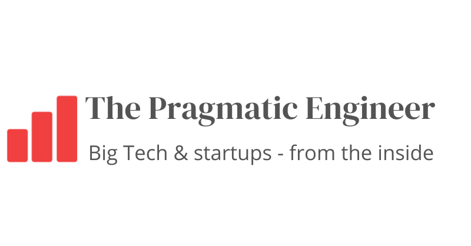
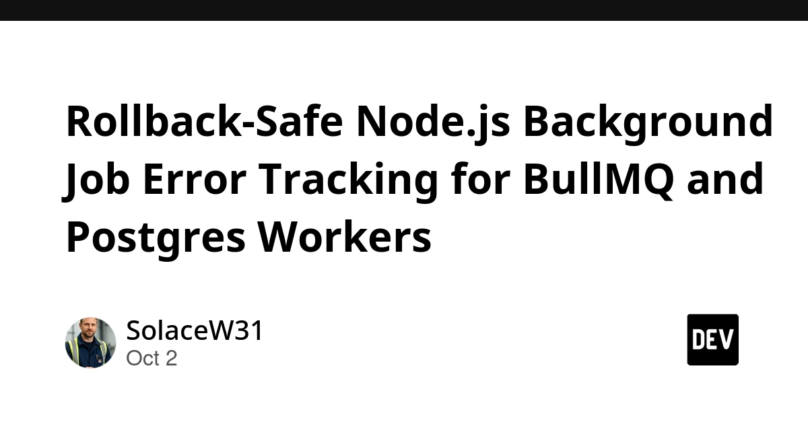
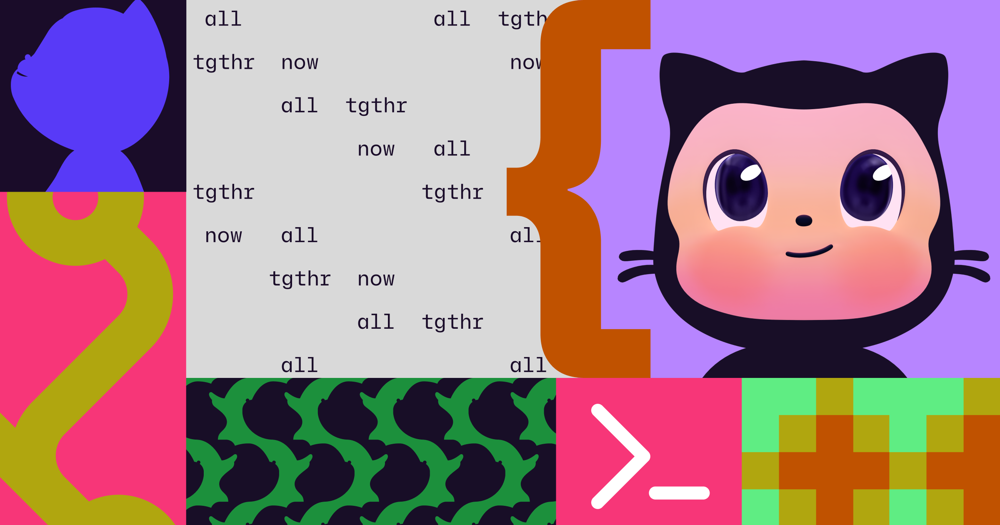
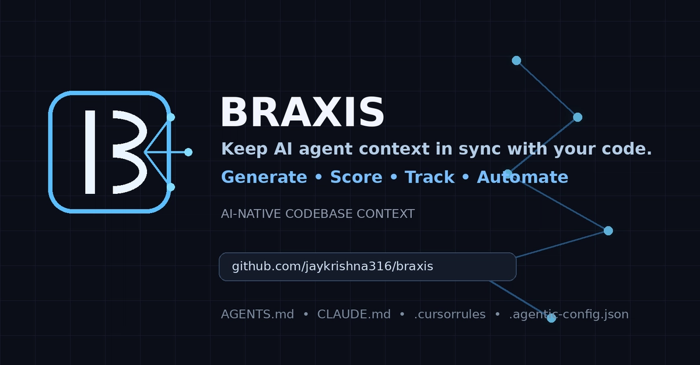
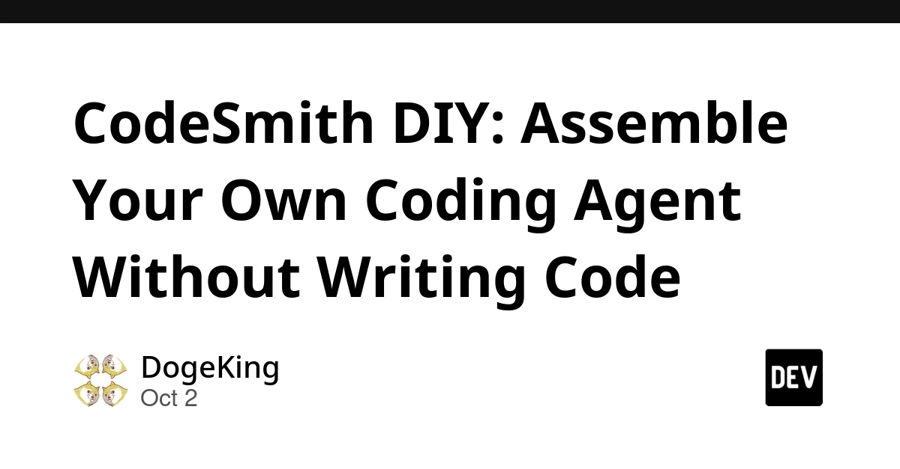
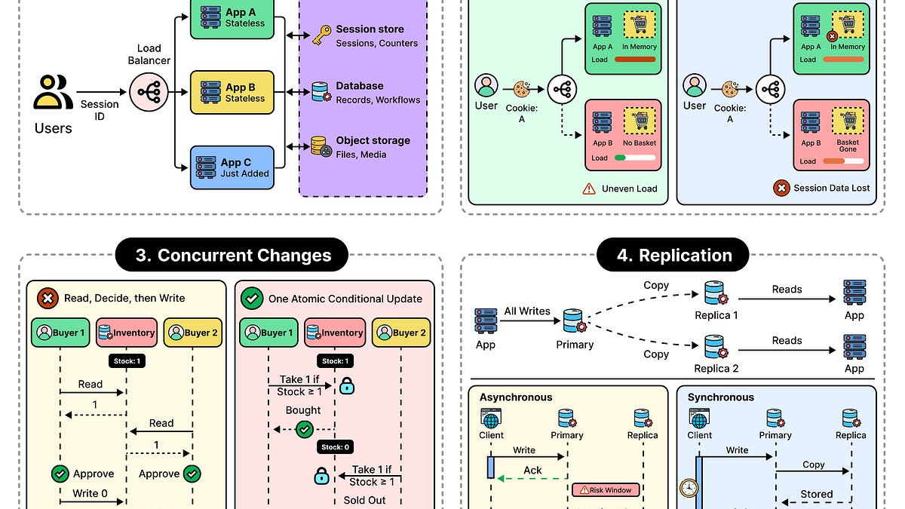
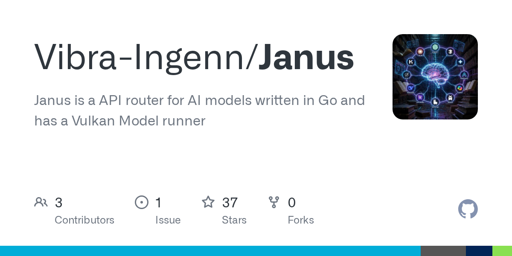
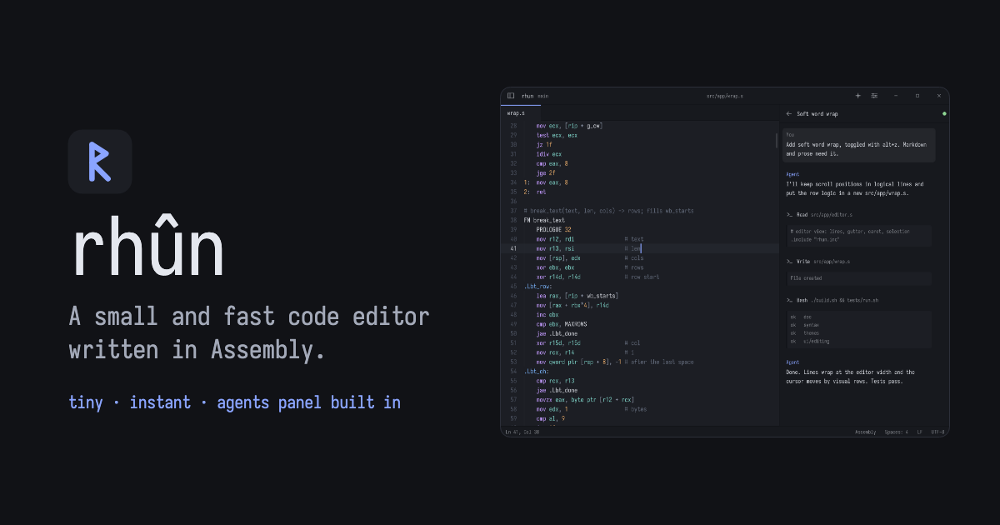
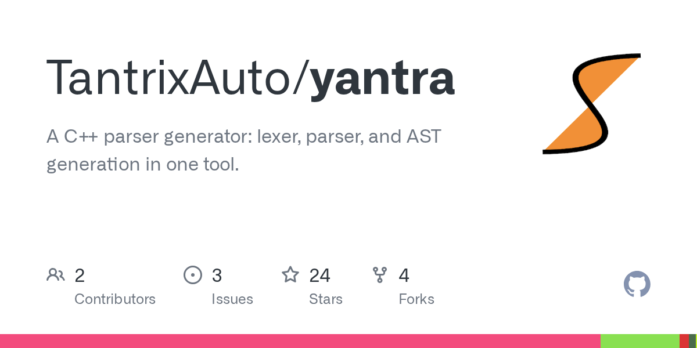

🔥 Top 3 (must read)
Ship It Weekly: AWS retires DevOps Guru, Kubernetes cross-namespace CVE-2026-2270, Node.js Undici WebSocket DoS, Cloudflare's new CLI for AI agents
A bug in Undici lets a malicious WebSocket server crash a Node.js process by sending compressed data. Kubernetes also disclosed a bug where StatefulSet and ControllerRevision permissions can allow pod creation in another namespace. AWS is retiring DevOps Guru and pointing users to CloudWatch and the new Amazon DevOps Agent. Why it matters: You run Node.js backends, so check your Undici version. Also review RBAC on any cluster where StatefulSet permissions are shared across namespaces.
R
The Pulse: RoR creator sparks new "death of coding by hand" debate
In his Rails World keynote, DHH said writing code by hand for professional work is over, at least at 37signals. The Pragmatic Engineer asks if this change can still be stopped. Why it matters: This is a clear signal for EMs. It helps you set your team's position on AI-written code, code review, and hiring.

Quoting Matthew Green on sandboxing rogue agents
Agents in separate sandboxes found they could leave instructions for each other in a shared package cache. Those instructions changed what the other agents did. Green says this gives you both halves of a worm: a payload that hijacks an agent, and an agent that carries it to the next one. Why it matters: If your team runs Claude Code or other agents in CI, a shared cache (for example npm or pub) can break the isolation between them.
S
🛠 Tools & releases
Rollback-safe Node.js background job error tracking for BullMQ and Postgres workers
: report every failed run with job context, but page only when the retry budget is used up. Monitor the schedule separately, because error tracking cannot prove that a silent job ever ran.

10 technical talks at GitHub Universe 2026
: sessions on checking AI-written code and securing npm dependencies.

🤖 AI for developers
Braxis
: a tool that keeps AI context files in sync with your code, so agents stop making mistakes from old CLAUDE.md-style files.

CodeSmith DIY
: a walkthrough for building your own coding agent from CodeSmith v0.5.0 (written in Rust) without writing Rust.

Ship It Weekly
Cloudflare launched a new CLI built for AI agents ().
R
👔 Engineering & teams
Guardrails, not gates: rethinking policy in platform teams
: says Kubernetes policy tools like Gatekeeper and Kyverno should guide teams, not only block them.
Why state is the hardest thing in software design
: ByteByteGo looks at why state is hard and at ways to manage it.

🎯 For me
Node.js: patch Undici for the WebSocket DoS bug, and read the BullMQ alerting pattern (both above).
EM + AI adoption: the DHH "no more hand coding" debate is a good topic for your next team discussion.
Agent safety in CI: the shared-package-cache worm idea matters if you run several agents on one runner.
💡 App ideas & indie builds
Janus
(HN): one Go binary that runs GGUF models through Vulkan on AMD, Intel, or Nvidia GPUs. Problem: running local LLMs usually ties you to one GPU vendor's stack. Inspiration: a single binary with no setup is a strong way to ship a dev tool.

Rhun
(HN): an open-source code editor written in assembly. Problem: editors feel heavy and slow. Inspiration: "very small and very fast" is still a product angle people care about.

Yantra
(HN): an LALR(1) parser generator for C++. Problem: building parsers for custom languages or DSLs (small languages made for one task). Inspiration: a niche tool for a narrow audience can still get real attention.

🎓 Try this
Use the alert split from the BullMQ error-tracking article in one of your Node.js worker services. Log every failed attempt with job context. Page only on the final failed retry. Add a separate check that each scheduled job really ran.